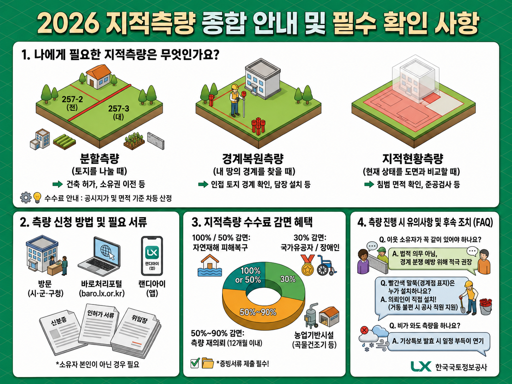
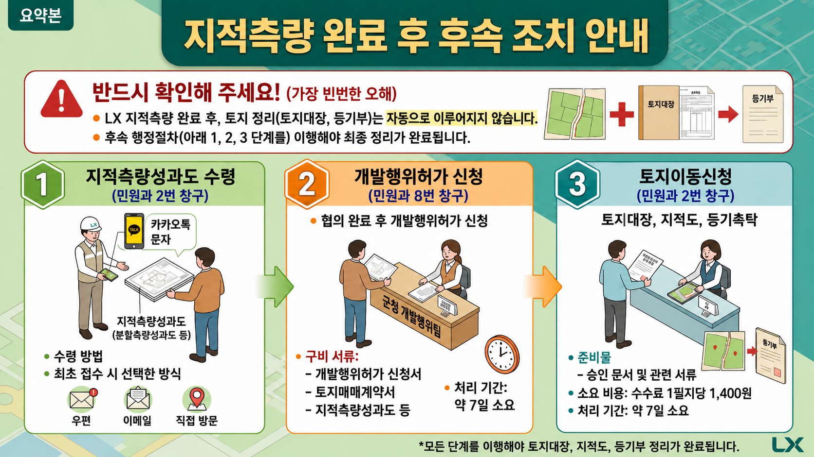
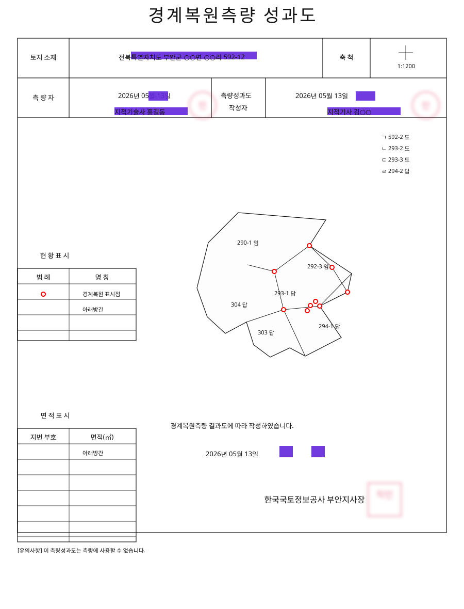
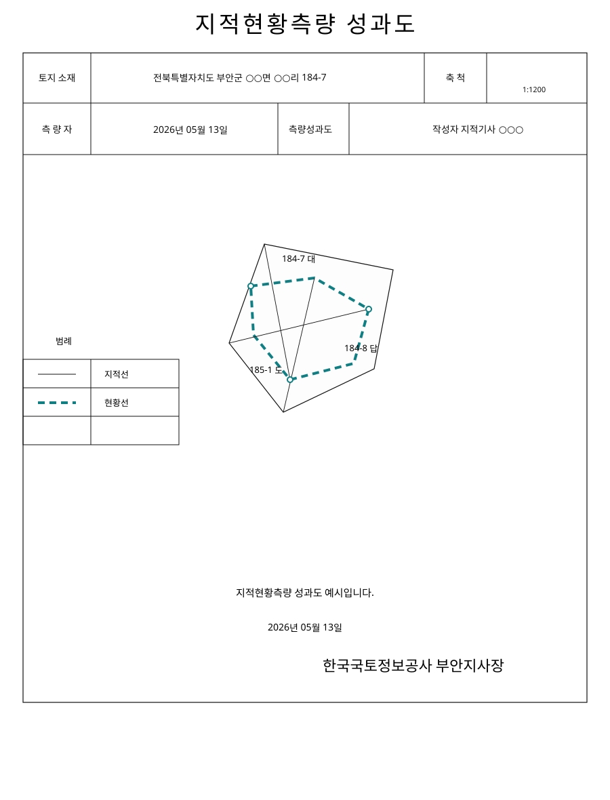
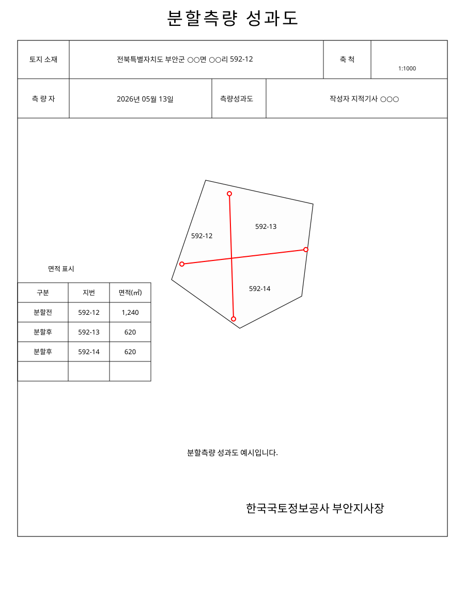
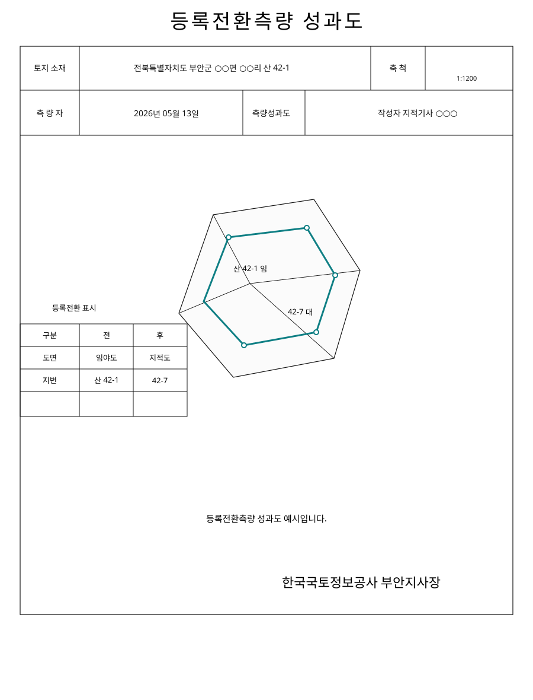

Registration Correction
등록사항정정
대정(大正) 연호 계산
대정은 1912년 7월 30일부터 1926년 12월 24일까지 사용된 일본 연호입니다.
서기 = 대정 연도 + 1911 예: 대정 4년 = 1915년소화(昭和) 연호 계산
소화는 1926년 12월 25일부터 1989년 1월 7일까지 사용된 일본 연호입니다.
서기 = 소화 연도 + 1925 예: 소화 31년 = 1956년단기 계산법
단기는 서기에 2333년을 더해 표시하는 방식입니다.
단기 = 서기 + 2333 예: 1956년 = 단기 4289년연호 변환기
대정ㆍ소화ㆍ단기 → 서기
연호와 연도를 입력하면 서기 연도로 바로 변환합니다.
서기
1912년
대정 1년은 1912년입니다.
정ㆍ단ㆍ무ㆍ보 계산기
정단무보 면적 계산
엑셀 계산식과 같이 정(町)은 3,000평, 단(段)은 300평, 무(畝)는 30평, 보(步)는 1평으로 합산합니다.
평
0
㎡
0.0
면적 단위 변환
제곱미터 ⇄ 평 계산
제곱미터 또는 평수 중 하나를 입력하면 다른 단위를 자동 계산합니다.
값을 입력하면 자동 계산됩니다.
공차는 토지 기준으로 0.026 × 0.026 × 1200 × √대장면적을 적용하며 소수점 한 자리까지 자동 계산합니다. 오차는 산출면적 - 대장면적으로 계산됩니다.
| 토지소재 | 지번 | 지목 | 대장면적 | 공차 | 산출면적 | 오차 | 결정면적 | 증감 | 변동사유 | 소유자 | 관리 | ||
|---|---|---|---|---|---|---|---|---|---|---|---|---|---|
| 읍면 | 동리 | 주소 | 성명 | ||||||||||
Cadastral Survey Fee
지적측량수수료 계산 안내
지적측량을 신청하기 전 예상 수수료가 궁금한 경우, 일사편리의 지적측량 수수료 계산 화면에서 국민이 직접 금액을 확인할 수 있습니다. 실제 접수 금액은 신청 내용, 측량 조건, 감면 여부, 현장 여건에 따라 달라질 수 있으므로 최종 금액은 접수기관의 안내를 함께 확인해야 합니다.
일사편리 접속
일사편리 메인 화면 또는 고객지원의 지적측량 안내 메뉴로 들어갑니다.
수수료 계산 선택
메인 화면의 지적측량 수수료 간편 계산 또는 지적측량 안내의 수수료 계산을 선택합니다.
측량종목 선택
경계복원, 지적현황, 분할측량, 등록전환 중 신청하려는 종목을 선택합니다.
토지 정보 입력
소재지, 산 여부, 지번, 면적, 지목, 토지구분, 축척, 개별공시지가를 입력합니다.
계산하기
측량수수료 계산하기를 누르면 산정 목록에 수수료와 금액이 표시됩니다.
입력 항목
계산 전에 준비할 정보
측량종목
경계복원, 지적현황, 분할측량, 등록전환
측량 소재지
시도, 시군구, 읍면동, 리, 산 여부, 본번, 부번
기본 토지 정보
면적, 지목, 토지구분, 축척
가격 정보
개별공시지가
상세 조건
지적현황, 분할측량, 등록전환은 적용구분과 필지수 또는 면적을 추가 입력
결과 확인
업무종목, 소재지, 원면적, 수량, 수수료, 경감액, 금액
메인 화면에서는 가운데 메뉴의 지적측량 수수료 간편 계산을 선택합니다.
경계복원
지적현황
분할측량
등록전환
전북특별자치도
부안군
하서면
장신리
산 0225 - 0000
검색
면적 16,264㎡
지목 묘지
축척 1:6000
개별공시지가 10,400원
소재지와 토지 정보를 입력한 뒤 검색하고, 하단의 측량수수료 계산하기를 누릅니다.
| 업무종목 | 소재지 | 원면적 | 수수료 | 금액 |
|---|---|---|---|---|
| 경계복원측량 | 전북특별자치도 부안군 하서면 장신리 | 16,264㎡ | 804,000 | 804,000 |
산정 목록에 표시된 금액은 예상 수수료입니다. 출력하거나 상담 시 참고자료로 활용할 수 있습니다.